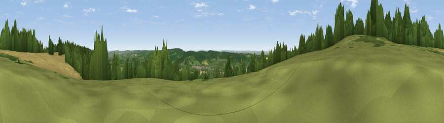

Viewpoint near Westerham
#27210 in England · top 11% of its area beats it · near WesterhamWhere it is
The exact computed spot (TQ 43775 56225). Click the marker for map links.
The view, rendered

A 360° render of this exact spot computed from the terrain model, tree cover and land cover — summer colours, afternoon light, calibrated against photographs of famous viewpoints. Real trees, hedges and buildings will differ in detail.
The panorama
Grey silhouette: terrain skyline in each direction (720 bearings, Earth curvature and refraction included). Dashed green: skyline with trees (+15 m) and buildings (+8 m) as obstacles. Blue strip: how far the ground is visible on each bearing.
Where the view opens
Wedge length = distance to the farthest visible ground on that bearing (vegetation-aware). Rings at 10, 25 and 50 km.
What fills the view
41% woodland · 35% cropland · 21% grassland · 3% built-up
Angular shares of the visible panorama (visual magnitude), not map area. Landscape diversity 0.51 (0–1 Shannon).
Key numbers
More beautiful places nearby
The staircase of upgrades: each row has a higher view potential than everything closer. Driving times are estimates from straight-line distance, calibrated against real road routing — check an actual route before setting out.
| Place | Direction | Drive | Score |
|---|---|---|---|
| Viewpoint near Tatsfield | W · 3 km | ~8 min | 53.1 |
| Viewpoint near Limpsfield | WSW · 4 km | ~10 min | 55.9 |
| Viewpoint near Limpsfield | WSW · 5 km | ~11 min | 64.0 |
| Viewpoint near French Street | SSE · 6 km | ~12 min | 64.5 |
| Viewpoint near Shipbourne | ESE · 13 km | ~25 min | 66.2 |
| Viewpoint near Lower Kingswood | W · 20 km | ~34 min | 67.7 |
| Viewpoint near Coldharbour | WSW · 32 km | ~49 min | 70.0 |
| Viewpoint near Plumpton | S · 44 km | ~64 min | 80.4 |
51.28702, 0.06036 · source: screening · position refined by local search. Computed location — check access rights before visiting.